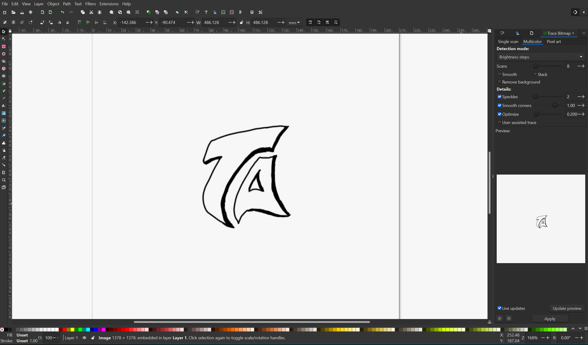
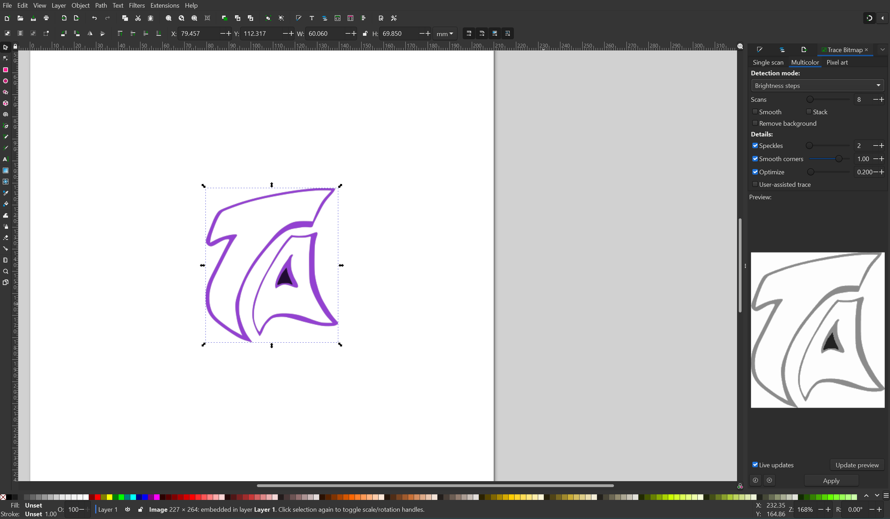
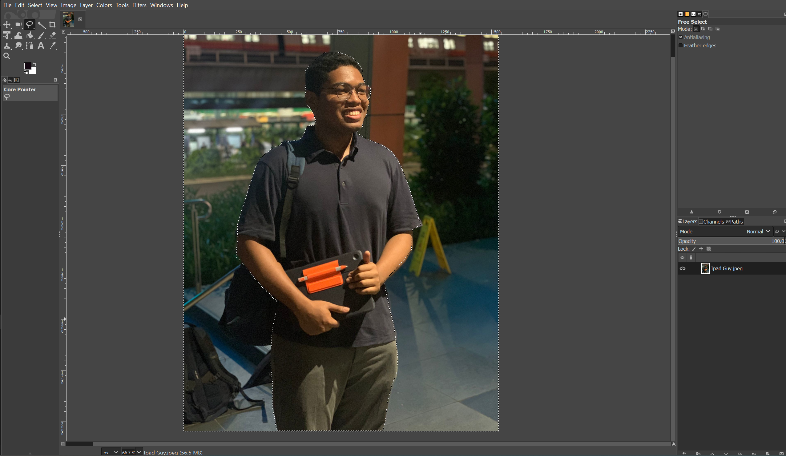
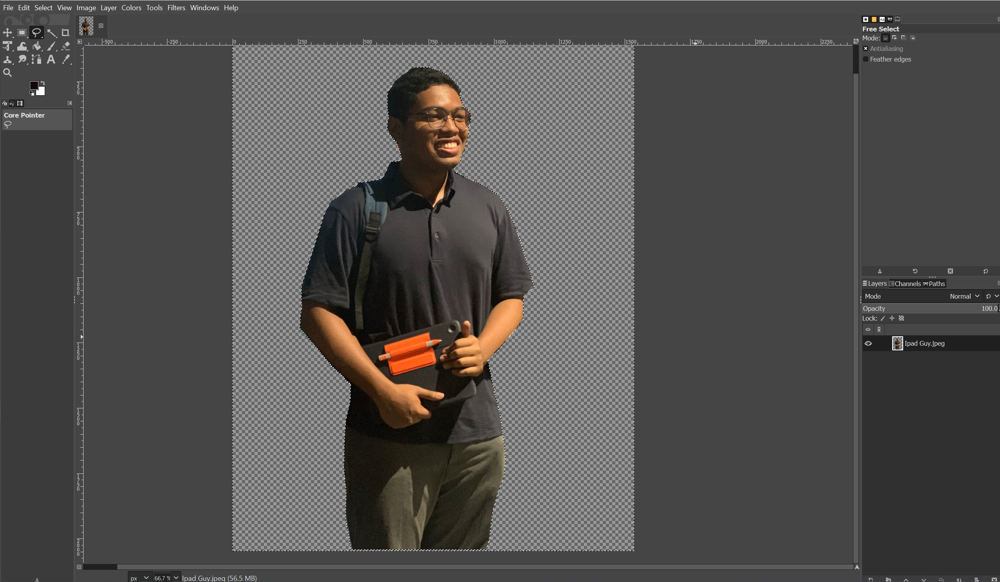

2D Computer Aided Design
For 2D Computer Aided Design (CAD), I learned about the difference between vector and raster image types and their different use cases.
I also learned how to use a few different CAD software such as:
1.Inkscape


I learned to create and edit vector images using Inkscape.For this elective, I used Inkscape to convert a logo
I drew for my website into vector format so that it could be infinitely scalable.
2.GIMP


I learned how to edit images using GIMP. Here I used it
to remove the background from a photo of myself
3. Fusion 360


I learned to create 2D sketches in Fusion 360 using the different sketch commands and dimensions.
Above are some 2D sketching exercises that I did